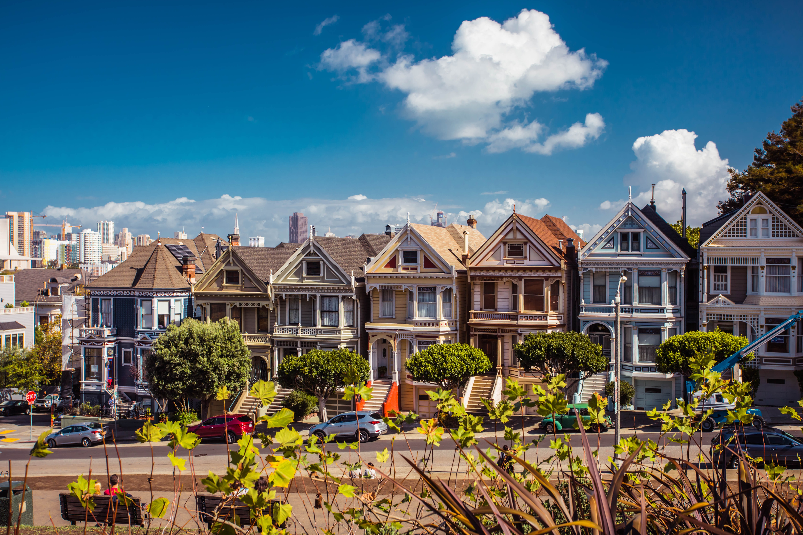
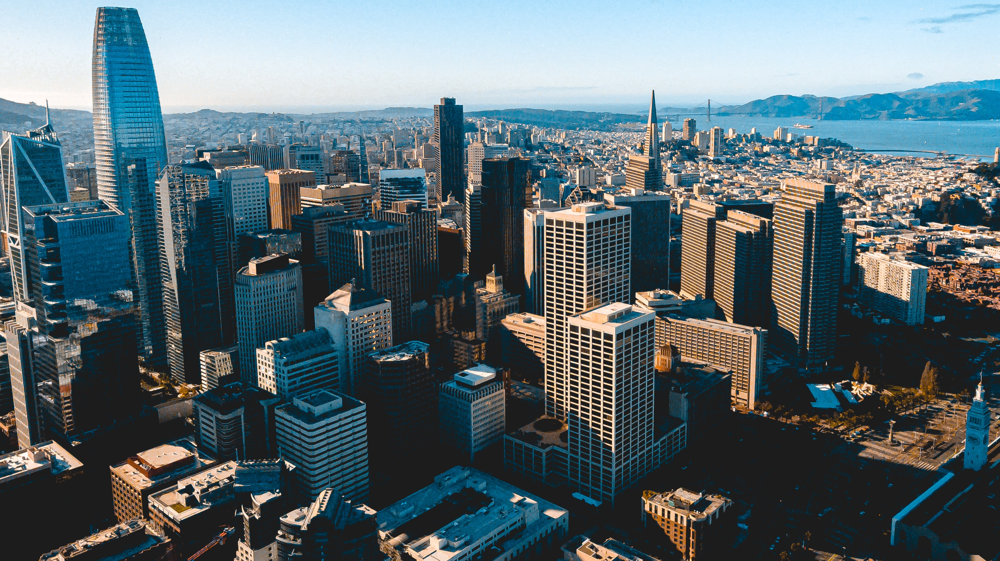

샌프란시스코는 미국 캘리포니아주에 위치한 도시로, 북부 캘리포니아의 문화, 경제, 상업 거점 역할을 하고 있다. 공식적인 명칭은 시티 앤 카운티 오브 샌프란시스코(영어: City and County of San Francisco, 스페인어: Condado de San Francisco 콘다도 데 산프란시스코[*])이다. 성 프란치스코에서 이름을 따왔다. 샌프란시스코의 면적은 46.9 제곱마일 (121 km2)이다. 샌프란시스코 반도의 북부 끝에 자리잡고 있으며, 미국의 주에서 가장 작은 군이다. 인구 밀도는 km2 당 7,022명으로, 캘리포니아 주에서 인구 밀도가 가장 높은 대도시(20만 명 이상 도시)이며, 미국 전체에서는 뉴욕에 이어 두 번째로 높다. 샌프란시스코의 인구는 2014년 기준으로 852,469명으로 로스앤젤레스, 샌디에고, 산호세에 이어 캘리포니아 주에서 네 번째로 인구가 많은 도시이다. 미국 전체에서는 13번째로 많다. 샌프란시스코와 그 주변 지역은 샌프란시스코 베이 에어리어라고 불리는데, 산호세-샌프란시스코-오클랜드 광역도시권은 860만 명의 인구로, 미국에서 다섯 번째로 큰 광역도시권이다.
샌프란시스코는 1776년 6월 29일 설립되었다. 1849년 캘리포니아 골드 러시로 크게 성장했으며, 미국 서해안에서 가장 큰 도시가 되었다. 1856년에는 도시와 군이 통합되었다.[4] 1906년 샌프란시스코 지진과 화재로 도시의 4분의 3이 파괴되었지만,[5] 빠르게 재건되었고 9년 뒤 파나마-태평양세계박람회를 개최했다. 제2차 세계대전 기간 동안에는 태평양 전장으로 나가는 군인들을 수송하는 거점 항구로 쓰였다. 전쟁이 끝나고 나서 "히피" 반문화와 함께 자유를 원하는 사람들, 전후 군인, 대규모 이민자가 섞이며 성혁명, 평화운동, 베트남 전쟁에 대한 미국의 개입 반대 운동, 사랑의 여름, 성소수자 권익수호 운동을 주도했고, 샌프란시스코는 미국 자유주의 운동의 중심지로 굳어졌다. 정치적으로는 민주당이 강세인 곳이다.
샌프란시스코는 인기있는 관광지이기도 한데, 시원한 여름, 안개, 가파르고 구불구불한 언덕, 조화로운 다양한 건축과 골든게이트 교, 케이블카, 알카트라즈 연방 교도소, 차이나타운과 같은 랜드마크로 잘 알려져있다. 또한 5개의 주요 금융 기관과 비자카드, 리바이스, 갭, 세일즈포스닷컴, 드롭박스, 레딧, 스퀘어, 에어비앤비, 위블리, 퍼시픽 가스 앤드 일렉트릭, 옐프, 핀터레스트, 트위터, 우버, 모질라, 위키미디어 재단, 크레이그리스트와 같은 여러 기업들의 본사가 있다. 샌프란시스코는 여러 별명이 있는데, "시티 바이 더 베이", "안개 도시", "샌 프란", "프리스코"를 포함해 "The City that Knows How", "바그다드 바이 더 베이", "서부의 파리"와 같은 오래 된 별명이 있다.